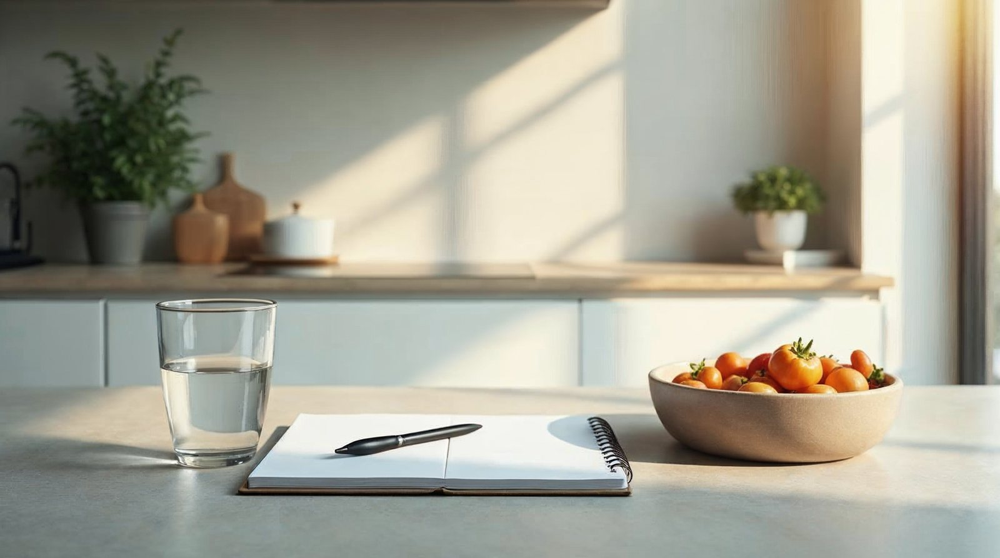

이종호 한의사 감수좋은꿈참사랑한의원 대표원장 (한의사 면허번호 19769)발행 2026-11-26 · 수정 2026-11-26
이 글의 차례
새벽 세 시, 이불이 발등에 닿기만 해도 소스라치게 깹니다. 어젯밤까지 멀쩡하던 엄지발가락 뿌리가 빨갛게 부어 있고, 손을 대지 않아도 욱신거립니다. 전날 저녁 회식에서 고기와 맥주를 꽤 먹었던 일이 그제야 떠오릅니다.
통풍은 피 속의 요산이 높은 상태가 오래 이어지다가, 요산이 바늘 같은 결정이 되어 관절에 쌓이고 그 자리에 갑자기 염증이 생기는 병입니다. 엄지발가락 뿌리에 가장 흔하고, 발등, 발목, 무릎에도 올 수 있습니다. 바람만 스쳐도 아프다는 이름처럼, 처음 겪는 분들은 그 통증의 세기에 많이 놀라십니다.
중요한 것은 두 시기를 나눠 보는 일입니다. 붓고 아픈 발작 때와, 통증이 가라앉은 발작 사이의 시간입니다. 발작 때는 염증을 가라앉히는 진료가 먼저이고, 발작 사이에는 요산이 쌓이지 않도록 생활과 약을 이어 가는 일이 중심이 됩니다.
진료실에서 이런 말씀을 자주 듣습니다. "아프지 않으니까 다 나은 줄 알았어요." 통증이 며칠 만에 사라지니 그렇게 생각하시는 것도 당연합니다. 하지만 요산 수치가 그대로라면 결정은 조용히 쌓여 갑니다. 그 사이의 시간이 사실은 더 중요하다는 말씀을 꼭 드리고 싶습니다.
왜 요산이 관절에 쌓일까요
요산은 몸속에서 세포가 새로 만들어지고 없어질 때, 그리고 음식 속 퓨린이라는 성분이 분해될 때 생기는 찌꺼기입니다. 대부분은 콩팥을 통해 소변으로 나가고, 일부는 장으로 나갑니다. 만들어지는 양이 많거나 빠져나가는 길이 좁아지면 피 속 요산이 높아집니다.
요산은 물에 잘 녹지 않는 성질이 있습니다. 피 속 농도가 높은 상태가 오래 이어지면, 몸 끝처럼 체온이 낮고 혈액 흐름이 느린 곳에서 결정이 되기 쉽습니다. 엄지발가락 뿌리가 대표적인 자리가 되는 까닭입니다.
술, 특히 맥주와 과당이 많은 단 음료, 내장류와 일부 해산물처럼 퓨린이 많은 음식은 요산을 올리는 쪽으로 작용한다고 알려져 있습니다. 복부 비만과 고혈압, 혈당 문제, 일부 이뇨제 같은 약도 요산과 관련이 있습니다. 가족 중 통풍이 있는 분도 조금 더 잘 생긴다고 알려져 있습니다.
발작은 요산이 갑자기 오르거나 내려갈 때 잘 옵니다. 과음한 다음 날, 탈수가 온 날, 급하게 굶어 체중을 뺀 시기, 수술이나 큰 병을 앓은 뒤가 그렇습니다. 요산약을 처음 시작한 무렵에도 한동안 발작이 생길 수 있어서 처방한 의사의 안내를 잘 따르셔야 합니다.
한의학에서는 이렇게 관절이 붓고 화끈거리며 아픈 모습을 비증(痺證) 가운데 열이 몰린 모습으로 보고 살펴 왔습니다. 저는 이 말을 진단명으로 쓰기보다, 몸에 열과 습이 쌓이는 생활이 있는지 돌아보는 실마리로 씁니다.
요산 수치, 이렇게 읽어 봅니다
검진 결과지의 요산 숫자는 보통 mg/dL로 적혀 있습니다. 흔히 7.0mg/dL 안팎을 넘으면 높다고 보지만, 기준은 기관과 성별에 따라 조금씩 다르니 결과지의 참고치와 내과 설명을 우선하세요.
요산이 높다고 모두 통풍 발작을 겪는 것은 아닙니다. 수치만 높고 아무 증상이 없는 분도 많습니다. 이런 경우를 무증상 고요산혈증이라고 부르며, 약을 쓸지 생활부터 볼지는 신장 기능과 다른 대사 수치를 함께 놓고 내과에서 정합니다.
반대로 발작이 한창일 때 잰 요산이 오히려 정상으로 나오는 경우도 있습니다. 그래서 숫자 하나로 통풍인지 아닌지를 정하지 않습니다. 관절액 검사나 영상 검사로 확인하기도 합니다.
발 하나가 아니라 몸 전체의 숫자를 봅니다
통풍으로 오신 분의 결과지를 펼쳐 보면 요산 하나만 높은 경우는 생각보다 드뭅니다. 허리둘레가 늘었고, 혈압이 경계에 있고, 중성지방이나 공복혈당도 함께 올라 있는 경우가 많습니다. 요산은 이 대사 숫자들과 함께 움직이는 경향이 있다고 알려져 있습니다.
그래서 저는 발이 아파 오신 분께도 혈압과 혈당, 간 수치, 콩팥 기능을 함께 여쭙니다. 통풍을 오래 앓으면 콩팥에도 부담이 갈 수 있고, 반대로 콩팥 기능이 떨어지면 요산이 잘 빠져나가지 못하기 때문입니다. 발의 통증은 몸 전체가 보내는 신호 가운데 가장 큰 소리일 뿐일 때가 많습니다.
발작이 여러 해 반복되면 귓바퀴나 팔꿈치, 손가락 마디에 하얀 덩어리가 만져지기도 합니다. 요산 결정이 뭉친 통풍결절인데, 이런 것이 만져진다면 요산 관리를 어떻게 이어 갈지 내과와 상의해 보시길 권합니다.
통풍과 헷갈리기 쉬운 관절 통증
엄지발가락 쪽이 아프다고 모두 통풍은 아닙니다. 엄지발가락이 바깥으로 휘면서 뿌리가 튀어나와 신발에 닿을 때마다 아프다면 무지외반증일 수 있습니다. 이때는 붉게 부어오르기보다 오래 걷거나 좁은 신발을 신은 날 더 아픈 양상입니다.
관절이 붓고 열이 나면서 몸 전체에 오한과 고열이 함께 온다면 세균에 의한 관절 감염일 수 있습니다. 통풍과는 살피는 방향이 전혀 다릅니다.
양쪽 손가락 관절이 아침마다 뻣뻣하고 여러 관절이 함께 붓는다면 류마티스 관절염 같은 다른 관절염을 먼저 생각합니다. 무릎이 붓는 경우는 퇴행성 관절염, 가성통풍처럼 다른 결정이 쌓이는 병과도 구분이 필요합니다.
발목을 접질린 기억이 없는데 발목이 붓고 아프다면, 통풍이 발목으로 온 것일 수도 있습니다. 저는 '어디가 아픈가'와 함께 '어떻게 시작했는가'를 꼭 여쭙습니다. 하룻밤 사이에 갑자기 시작했는지, 며칠에 걸쳐 서서히 심해졌는지가 큰 단서가 됩니다.
발작이 왔을 때와 발작 사이
발작이 왔을 때
아픈 관절은 쉬게 하고, 발을 조금 높여 두고, 얼음주머니를 수건에 싸서 잠깐씩 대는 것이 도움이 될 수 있습니다. 뜨겁게 찜질하거나 세게 주무르는 것은 염증을 더 자극할 수 있어 피하시길 권합니다.
발작 때는 염증을 가라앉히는 약을 처방받아 쓰는 것이 일반적입니다. 이미 받아 둔 약이 있다면 처방받을 때 들은 대로 드시고, 술은 그 기간 동안 쉬어 주세요. 물은 평소보다 조금 넉넉히 드시는 것이 좋습니다.
발작 사이
통증이 가라앉으면 많은 분이 진료를 멈춥니다. 하지만 이때가 요산을 관리할 시간입니다. 요산약을 처방받으셨다면 아프지 않아도 의사와 상의 없이 끊지 않는 것이 중요합니다. 약을 들쭉날쭉 드시면 요산이 오르내리며 오히려 발작이 잦아질 수 있습니다.
술, 물, 계절이 발작과 맞물리는 방식
술은 요산을 두 방향에서 올린다고 알려져 있습니다. 몸에서 요산이 더 만들어지게 하고, 동시에 콩팥이 요산을 내보내는 일을 방해합니다. 맥주는 술 자체에 더해 퓨린도 들어 있어 더 자주 이야기됩니다. 그렇다고 소주나 와인은 괜찮다는 뜻은 아니어서, 저는 종류보다 마시는 날 수와 양을 먼저 봅니다.
물은 요산이 빠져나가는 길을 넓혀 주는 쪽에 가깝습니다. 땀을 많이 흘리는 여름, 사우나나 등산 뒤, 설사를 한 날처럼 몸의 물이 줄어든 때는 요산이 진해지기 쉽습니다. 계절이 바뀌는 시기나 연말처럼 모임이 몰리는 때 발작이 잦았다면, 그 시기 앞에 미리 물과 술의 계획을 세워 두는 것이 좋습니다.
추위도 한몫합니다. 발끝은 몸에서 가장 차가운 곳 가운데 하나라, 겨울에 발을 차게 두는 습관이 있다면 양말과 실내화로 따뜻하게 지켜 주세요. 작은 습관이지만 결정이 생기기 쉬운 자리를 덜 차게 하는 데 보탬이 됩니다.
예를 들면 이런 경우입니다
실제 어느 분의 사연이 아니라, 진료실에서 자주 보는 모습을 바탕으로 그려 본 장면입니다.
예를 들어 연말 회식이 이어지는 시기에 맥주와 안주를 자주 드시는 직장인이라면, 메뉴를 하나하나 따지기 전에 일주일 동안 술을 마신 날이 며칠인지부터 세어 보자고 합니다. 날 수를 하나 줄이는 것이 안주를 고르는 것보다 지키기 쉽습니다.
여름에 땀을 많이 흘리며 일하고 물은 잘 드시지 않는 분이라면, 탈수가 발작의 방아쇠가 되지 않도록 물 마시는 시간을 정해 두자고 말씀드립니다. 심장이나 콩팥 문제로 물을 제한하라는 안내를 받은 분은 그 안내를 따르셔야 합니다.
검진에서 요산이 조금 높다는 말만 듣고 아직 한 번도 아파 본 적 없는 분이라면, 겁부터 내실 필요는 없습니다. 다만 그 숫자가 혈압, 허리둘레, 혈당과 함께 오르고 있는지 지난 몇 해의 결과지를 나란히 놓아 보시길 권합니다. 함께 오르고 있다면 발보다 생활 전체를 먼저 돌아볼 때라는 신호로 읽습니다.
먼저 이렇게 여쭙니다
- 어느 관절이, 언제부터, 하룻밤 사이에 갑자기 아팠나요?
- 열이나 오한이 함께 있었나요? 아픈 관절이 하나인가요, 여러 곳인가요?
- 요산 수치와 신장 기능 검사 결과가 있나요? 지난해와 비교하면 어떤가요?
- 요산약이나 혈압약, 이뇨제, 아스피린처럼 드시는 약은 무엇인가요?
- 술은 일주일에 며칠, 어떤 종류를 드시나요? 단 음료는 어떤가요?
- 하루에 물은 얼마나 드시고, 소변 색과 횟수는 어떤가요?
일상에서 먼저 해 볼 수 있는 것
통풍이 있다고 하면 고기를 아예 끊는 분이 계십니다. 그런데 극단적으로 끊으면 오래 지키기 어렵고, 단백질이 모자라 근육이 줄 수도 있습니다. 저는 '몽땅 끊기'보다 '줄일 것 하나, 늘릴 것 하나'를 정해 보시라고 권합니다.
- 술 마시는 날을 일주일에 하루씩 줄이기, 특히 맥주와 소주를 섞어 많이 마시는 날 줄이기
- 단 음료와 과일 주스를 물이나 보리차로 바꾸기
- 내장류, 곱창, 진한 고깃국물, 멸치·정어리 같은 음식은 자주 먹지 않기
- 채소와 곡류, 유제품은 적당히 챙기기
- 물을 하루에 나눠 조금씩 넉넉히 마시기(물 제한 안내를 받은 분은 제외)
- 체중을 줄이더라도 굶지 말고 한 달 단위로 천천히 줄이기
여기서 굶어서 빼는 방식은 꼭 피하셨으면 합니다. 갑자기 굶으면 몸에서 요산이 더 만들어져 발작이 올 수 있다고 알려져 있습니다. 체중 이야기는 서두르지 않는 것이 통풍에는 오히려 지름길입니다.
잠과 피로도 무시할 수 없습니다. 무리한 일정이 이어지고 잠이 짧은 주간에 발작이 왔다는 분이 적지 않습니다. 달력에 발작이 온 날을 표시해 두면, 그 앞에 어떤 일이 있었는지가 보이기 시작합니다.
한의원에서 함께 살필 수 있는 경우
- 병원에서 통풍 진단을 받고 약을 드시면서, 체중과 식사 리듬을 함께 조절하고 싶은 경우
- 발작은 가라앉았지만 발과 발목, 무릎이 뻐근하고 걷기가 불편한 경우
- 요산과 함께 혈압, 혈당, 중성지방이 경계로 나와 생활 전체를 돌아보고 싶은 경우
- 술자리와 늦은 식사가 잦아 잠과 소화가 함께 흐트러진 경우
좋은꿈참사랑한의원에 처음 오시면 먼저 아래 '먼저 확인이 필요한' 신호가 없는지부터 봅니다. 그다음 맥을 짚으며 잠, 땀, 소변, 식사를 여쭙고, 필요하다고 판단되면 인바디 770으로 체지방과 근육량을 재어 기록해 둡니다.
그 뒤 진찰한 내용을 바탕으로 생활 목표 하나와 함께 침이나 한약 상담을 상태에 맞춰 정합니다. 발작 중인 관절에 직접 자극을 주는 일은 조심스럽게 판단합니다. 한약을 상의할 때는 요산약과 혈압약, 신장 기능을 함께 확인하며 신중하게 정하고, 요산약은 처방한 의사와 상의 없이 바꾸지 않습니다.
다시 오시면 지난번 정한 목표가 실제로 어땠는지, 그사이 발이 다시 신호를 보낸 날은 없었는지부터 이어서 여쭙습니다.
이렇게 기록해 오시면 상담이 쉬워집니다
- 요산, 크레아티닌(신장 기능), 혈당, 중성지방이 있는 최근 결과지
- 발작이 온 날짜와 관절, 그 전날 먹고 마신 것
- 일주일 동안 술을 마신 날과 양
- 하루 물 마신 양과 소변 횟수
- 드시는 약과 영양제 이름

발작 사이의 하루를 함께 챙기며
통풍은 한 번의 발작보다 그다음 몇 해의 생활이 더 길게 이어지는 병입니다. 무섭게 아팠던 그 밤을 너무 오래 마음에 담아 두지 마셨으면 합니다.
아프지 않은 날이 길어질수록 조심하던 마음도 느슨해지기 쉽습니다. 그래서 저는 발작이 없는 시기에 오히려 더 자주 생활 이야기를 나누고 싶습니다. 술 마신 날 수, 물 마신 양, 체중의 흐름을 같이 적어 가다 보면 발이 보내는 신호보다 한발 앞서 갈 수 있습니다. 다음에 오시면 지난 한 주 술을 마신 날이 며칠이었는지부터 여쭙겠습니다.
이런 증상은 먼저 확인이 필요합니다
- 관절이 붉게 붓고 38도 이상의 열이나 오한이 함께 있는 경우
- 옆구리가 찢어질 듯 아프거나 소변에 피가 섞이고 소변량이 갑자기 줄어든 경우
이런 신호가 있으면 한의원보다 가까운 병원이나 응급실을 먼저 찾으세요.
함께 읽으면 좋은 글
- 콜레스테롤과 중성지방 수치가 높게 나오면 생활에서 무엇부터 보나요?
- 고혈압 진단을 받았거나 경계라는 말을 들었다면 생활에서 무엇부터 살피나요?
- 건강검진 혈액검사 결과지를 가져가면 무엇을 같이 보나요?
- 건강검진 결과지에서 대사증후군은 어떤 항목을 보나요?
- 인바디 결과지는 어디부터 보면 되나요?

여쭙는 것
- 어느 관절이, 언제부터, 하룻밤 사이에 갑자기 아팠나요?
- 열이나 오한이 함께 있었나요? 아픈 관절이 하나인가요, 여러 곳인가요?
- 요산 수치와 신장 기능 검사 결과가 있나요? 지난해와 비교하면 어떤가요?
생활에서 해 볼 것
- 술 마시는 날을 일주일에 하루씩 줄이기, 특히 맥주와 소주를 섞어 많이 마시는 날…
- 단 음료와 과일 주스를 물이나 보리차로 바꾸기
- 내장류, 곱창, 진한 고깃국물, 멸치·정어리 같은 음식은 자주 먹지 않기
한의원에서 함께 살필 것
- 병원에서 통풍 진단을 받고 약을 드시면서, 체중과 식사 리듬을 함께 조절하고 싶은 경우
- 발작은 가라앉았지만 발과 발목, 무릎이 뻐근하고 걷기가 불편한 경우
- 요산과 함께 혈압, 혈당, 중성지방이 경계로 나와 생활 전체를 돌아보고 싶은 경우
먼저 확인이 필요한 신호
- 관절이 붉게 붓고 38도 이상의 열이나 오한이 함께 있는 경우
- 옆구리가 찢어질 듯 아프거나 소변에 피가 섞이고 소변량이 갑자기 줄어든 경우
한눈에 보는 표
| 구분 | 핵심 |
|---|---|
| 여쭙는 것 | 어느 관절이, 언제부터, 하룻밤 사이에 갑자기 아팠나요? 열이나 오한이 함께 있었나요? 아픈 관절이 하나인가요, 여러 곳인가요? |
| 생활에서 해 볼 것 | 술 마시는 날을 일주일에 하루씩 줄이기, 특히 맥주와 소주를 섞어 많이 마시는 날 줄이기 단 음료와 과일 주스를 물이나 보리차로 바꾸기 |
| 한의원에서 함께 살필 것 | 병원에서 통풍 진단을 받고 약을 드시면서, 체중과 식사 리듬을 함께 조절하고 싶은 경우 발작은 가라앉았지만 발과 발목, 무릎이 뻐근하고 걷기가 불편한 경우 |
| 먼저 확인이 필요한 신호 | 관절이 붉게 붓고 38도 이상의 열이나 오한이 함께 있는 경우 옆구리가 찢어질 듯 아프거나 소변에 피가 섞이고 소변량이 갑자기 줄어든 경우 |
자주 묻는 질문
요산 수치가 높으면 모두 통풍인가요?
요산이 높아도 발작 없이 지내는 분이 많습니다. 통풍은 요산 결정이 관절에 쌓여 염증이 생긴 상태를 말하며, 약을 쓸지 생활부터 볼지는 신장 기능과 다른 수치를 함께 놓고 내과에서 정합니다.
발작이 오면 찜질을 해도 되나요?
뜨거운 찜질이나 세게 주무르기는 염증을 자극할 수 있어 피하시길 권합니다. 관절을 쉬게 하고 높여 두며, 수건에 싼 얼음주머니를 잠깐씩 대는 정도가 무난합니다.
통증이 없어졌는데 요산약을 계속 먹어야 하나요?
요산약은 아프지 않을 때 요산을 낮게 유지하려고 쓰는 약입니다. 줄이거나 끊는 일은 처방한 의사와 상의해서 정하시고, 혼자 판단해 멈추지 않으시길 권합니다.
고기는 아예 먹으면 안 되나요?
내장류나 진한 고깃국물처럼 퓨린이 많은 음식은 줄이되, 단백질을 모두 끊기보다 양과 빈도를 조절하는 쪽이 오래 지키기 쉽습니다. 술과 단 음료를 줄이는 것도 함께 보셔야 합니다.
한의원에서 요산 수치를 잴 수 있나요?
원내에서 확인할 수 있는 검사 항목은 방문 전 전화로 확인해 주세요. 병원이나 검진에서 받은 요산·신장 기능 결과지를 가져오시면 함께 놓고 봅니다.
좋은꿈참사랑한의원은 재진 때 지난번 이야기부터 이어서 여쭙니다. 진료시간과 예약은 오시는 길에서 확인하세요.
어디서 상담받을 수 있나요?
좋은꿈참사랑한의원은 서울 동작구 만양로2길 2 신성빌딩 3층·5층(서울 동작구 상도동, 7호선 상도역 3번 출구 근처)에 있습니다. 한의사 3명(이종호 대표원장, 조영기 수석진료원장, 정원영 진료원장)이 진료합니다. 진료시간은 평일 09:30~20:00(점심 13:00~14:00), 토·일·공휴일 09:30~15:00이며, 방문 전 전화로 확인을 권합니다. 예약은 네이버 예약, 카카오톡 상담, 전화 02-815-7510로 받습니다.
이 글은 일반적인 건강 정보이며 개인의 진단이나 치료를 대신하지 않습니다. 증상이 있거나 복용 중인 약이 있다면 진료를 통해 확인하세요. 치료 효과는 개인마다 다를 수 있습니다.
작성 기준: 일반적으로 알려져 있는 건강 정보를 참고해 정리했습니다(대표원장 감수). 증상 기록은 1~2주 동안 하루 1회, 비슷한 시간에 적어 오시면 지난 상태와 비교하기 쉽습니다.